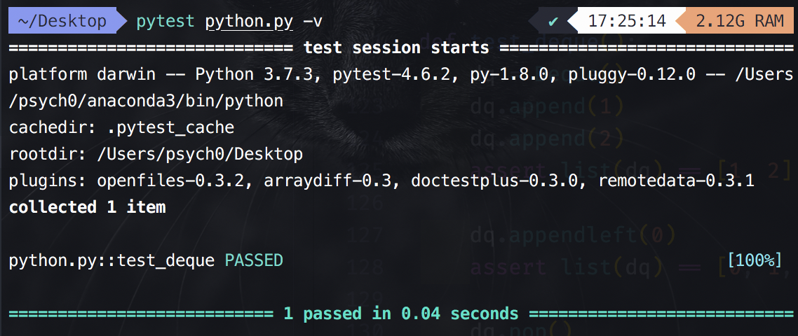

双端队列在队列的两端都可以进行 push、pop 操作。
对于双端队列，Python 中的 collections.deque 模块就能高效在两头操作。
在实现的时候我们可能需要实现 append()、appendleft()、popleft()、pop()等几种方法；并且希望他们的实现方法都是 时间复杂度。
我们可以考虑用之前已经实现的循环双端链表来实现。因为它已经实现了 append() 和 appendleft()方法，只需要再实现 popleft() 和 pop() 方法就好了。（似乎不需要循环，只要是双端链表就能实现；但是之前我们只实现了循环双端链表）
代码实现如下：
# from collections import deque # 这里直接将前面的循环双端链表 copy 过来 class Node(object): __slots__ = ('value', 'prev', 'next') # 如果节点很多，我们可以用 __slots__ 来节省内存，把属性保存在一个 tuple 而不是 dict 里 def __init__(self, value=None, prev=None, next=None): self.value, self.prev, self.next = value, prev, next class CircularDoubleLinkedList(object): """循环双端链表 ADT 多了个循环其实就是把 root 的 prev 指向 tail 节点，串起来 """ def __init__(self, maxsize=None): self.maxsize = maxsize node = Node() node.next, node.prev = node, node # 先将该 node 节点的 prev 和 next 都指向自己（形成一个“闭环”） self.root = node # 将 root 节点也先设为该节点 self.length = 0 def __len__(self): return self.length def headnode(self): # 返回头节点，也就是 root 节点后面的那一个节点 return self.root.next def tailnode(self): # 返回尾节点，也就是 root 节点前面的那一个节点 return self.root.prev def append(self, value): # O(1), 你发现一般不用 for 循环的就是 O(1)，有限个步骤 if self.maxsize is not None and len(self) >= self.maxsize: # 和单链表对应部分类似 raise Exception('LinkedList is Full!') node = Node(value=value) tailnode = self.tailnode() or self.root # 得到 tailnode（or 可以实现：从左到右扫描，返回第一个为真的表达式值，无真值则返回最后一个表达式值。） tailnode.next = node # 将 tailnode 的下一个节点指向该节点（因为该节点是添加在 tailnode 后面的） node.prev = tailnode # 将新建的这个节点的前一个节点指向 tailnode（因为该节点是添加在 tailnode 后面的） node.next = self.root # 将该节点的下一个节点指向 root 节点（因为该节点现在是 tailnode 节点） self.root.prev = node # 将 root 节点的前一个节点指向该节点，形成循环 self.length += 1 def appendleft(self, value): if self.maxsize is not None and len(self) >= self.maxsize: raise Exception('LinkedList is Full!') node = Node(value=value) if self.root.next is self.root: # 如果是空链表（即只有一个 root 节点） node.next = self.root # 将该节点的下一个节点指向 root 节点；因为现在只剩 root 节点和该节点 node.prev = self.root # 将该节点的前面一个节点也指向 root 节点 self.root.next = node # 将 root 节点的下一个节点指向该节点 self.root.prev = node # 将 root 节点的上一个节点也指向该节点 else: # 如果不是空节点 node.prev = self.root # 将该节点的前一个节点指向 root 节点 headnode = self.root.next # 将 root 节点后面的节点（也就是头节点）先赋值给 headnode node.next = headnode # 将“原来”的头节点设置为新插入节点的下一个节点 headnode.prev = node # 将“原来”的头节点的前一个节点指向为该节点 self.root.next = node # 将 root 节点的下一个节点指向该节点 self.length += 1 def remove(self, node): # O(1)，传入的是 node；如果是 value 那么时间复杂度还是 O(n) """remove :param node # 在 lru_cache 里实际上根据key 保存了整个node: """ if node is self.root: # 如果是空链表，那么就什么都不需要做直接返回即可 return else: node.prev.next = node.next # 将该节点（要删除的节点）的下一个节点设置为该节点前一个节点的 next node.next.prev = node.prev # 将该节点的前一个节点设置为该节点下一个节点的 prev self.length -= 1 return node def iter_node(self): if self.root.next is self.root: # 如果是空链表就直接返回 return curnode = self.root.next # 将 curnode 设置为头节点（从头节点开始遍历） while curnode.next is not self.root: # 遍历直到结束（循环到最后就又回到 root） yield curnode curnode = curnode.next yield curnode def __iter__(self): for node in self.iter_node(): yield node.value def iter_node_reverse(self): """相比单链表独有的反序遍历""" if self.root.prev is self.root: # 如果是空链表则直接返回 return curnode = self.root.prev # 从尾节点开始遍历 while curnode.prev is not self.root: #从尾节点开始遍历到 root 节点 yield curnode curnode = curnode.prev yield curnode ############################################################ # 下面是双端队列 ############################################################ # 双端队列的实现 class Deque(CircularDoubleLinkedList): # 这里用到了继承 def pop(self): """删除尾节点""" if len(self) == 0: # 如果已经为空队列，则 raise raise Exception('empty.') tailnode = self.tailnode() # 获得当前链表的尾节点 value = tailnode.value # 获得尾节点的值 self.remove(tailnode) # 将这个节点 remove；注意这里传入的是节点而不是值 return value # 将尾节点的值返回 def popleft(self): # 和上面的 pop 方法类似，只是是从左边 pop if len(self) == 0: raise Exception('empty.') headnode = self.headnode() value = headnode.value self.remove(headnode) return value def test_deque(): dq = Deque() dq.append(1) dq.append(2) assert list(dq) == [1, 2] dq.appendleft(0) assert list(dq) == [0, 1, 2] dq.pop() assert list(dq) == [0, 1] dq.popleft() assert list(dq) == [1] dq.pop() assert len(dq) == 0
执行 pytest python.py -v 后的结果：
